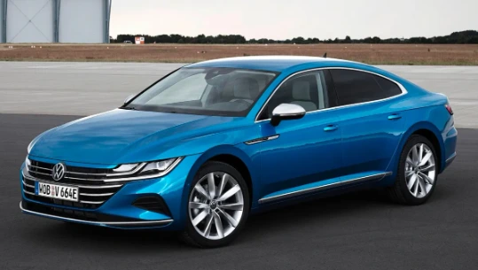
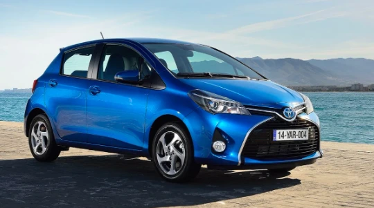
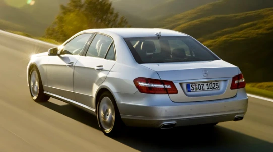
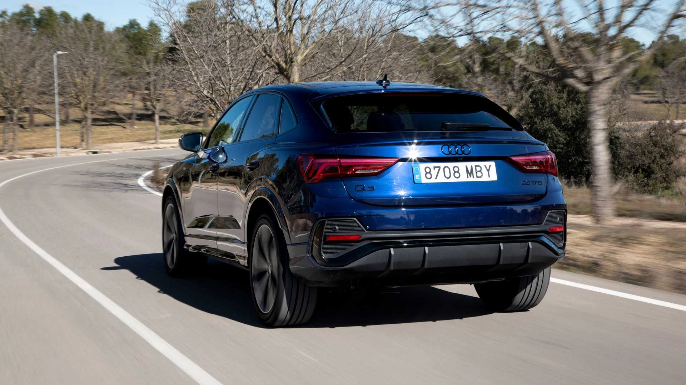
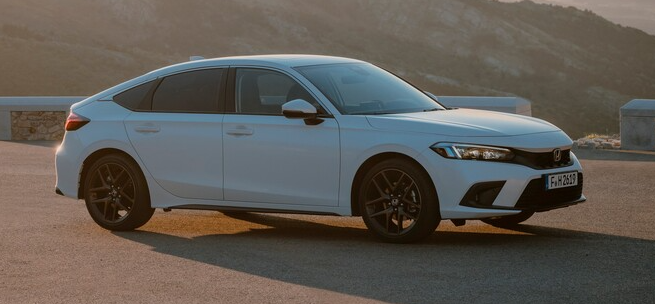

Elegir el tipo de coche adecuado es una decisión clave que depende de tus necesidades, estilo de vida y presupuesto. Cada tipo de motor tiene ventajas únicas y está diseñado para adaptarse a distintos tipos de conductores y trayectos.
Diesel
Los diésel son perfectos para quienes recorren largas distancias y buscan eficiencia en carretera o potencia para remolcar.

Volkswagen / Audi 2.0 TDI CR (2015 - Actualidad)
El motor 2.0 TDI CR de Volkswagen y Audi es reconocido por su equilibrio entre potencia, eficiencia y fiabilidad. Lanzado en 2015 con la tecnología Common Rail (CR), este motor diésel se ha convertido en uno de los más populares en vehículos como el Volkswagen Passat, Golf y Audi A4.

Toyota 1.4 D4D (2004 - 2019)
El motor 1.4 D4D de Toyota es famoso por su fiabilidad, eficiencia y bajo mantenimiento, características que lo convirtieron en uno de los favoritos en coches compactos y urbanos durante más de una década. Ha estado presente en modelos como el Toyota Yaris, Auris y Corolla.

Mercedes-Benz 2.1 CDI BlueTEC (2011 - 2018)
El motor 2.1 CDI BlueTEC de Mercedes-Benz es conocido por su equilibrio entre potencia, eficiencia y tecnología avanzada en vehículos premium. Este motor se utilizó ampliamente en modelos como el Mercedes Clase C, Clase E y GLC, destacando por su rendimiento y cumplimiento con estrictas normativas ambientales.
Gasolina
Los coches de gasolina destacan por su versatilidad y menor coste inicial, ideales para quienes realizan trayectos cortos o urbanos.

Audi Q3 3.5 TFSI
El Audi Q3 3.5 TFSI es una opción sobresaliente dentro del segmento de SUVs compactos premium, combinando un motor a gasolina de alto rendimiento con tecnología avanzada para ofrecer una experiencia de conducción dinámica y refinada.

Honda Civic
El Honda Civic es uno de los modelos más emblemáticos de la marca japonesa, conocido por su fiabilidad, diseño deportivo y eficiencia. Disponible en varias motorizaciones, el Civic ha sido una opción popular tanto para conductores urbanos como para quienes buscan un coche con un manejo más dinámico.